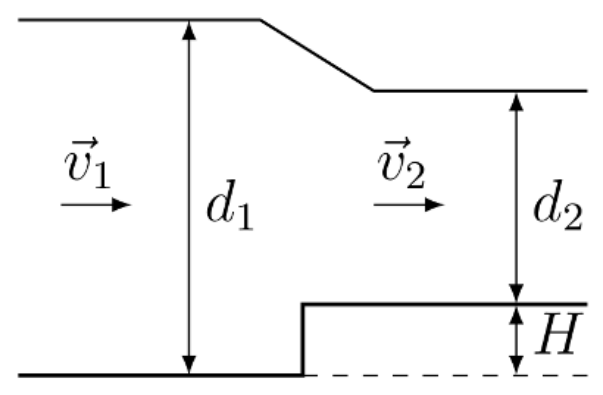
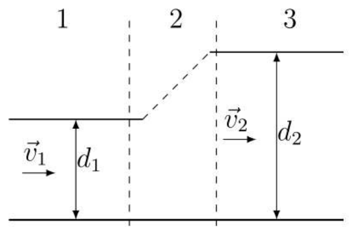

도수 현상(hydraulic jump)은 유체의 빠른 흐름이 갑자기 느려지면서 흐름 안에서 유체 수위가 상승하는 현상이다. 이 현상은 강이나 운하의 흐름에서 자연적으로 일어날 수 있다. 또한 댐 건설에서 물 흐름의 속력을 줄이는 데 이용된다. 더 나아가, 도수 현상은 가정에서도 관찰될 수 있다. 예를 들어, 물줄기가 싱크대 표면에 부딪치면 그 주위로 빠르게 흐르는 얇은 층의 원형 구조가 형성된다. 물줄기로부터 어떤 거리에서 수위가 상승하는데, 이것이 도수 현상이다. 이 문제는 보존 법칙을 이용해 이 현상을 기술할 것을 요구한다.
문제 전체는 비압축성 유체로 간주할 수 있는 물의 흐름을 다루며, 밀도는 $\rho = 1.0\cdot10^3\,\mathrm{kg/m^3}$이다. 중력 가속도는 $g = 9.8\,\mathrm{m/s^2}$이다.
에너지 손실을 무시하면, 정상(시간 무관) 유체 흐름에 대해 임의의 유선관(current tube)을 따라 베르누이 방정식(Bernoulli equation)이 성립한다. 이는 다음과 같이 표현된다:
\[E = \frac{P}{\rho} + \frac{v^2}{2} + gz = \mathrm{const}\]이 방정식에서 $P$는 압력, $v$는 흐름 속도, $z$는 고려하는 유체 부피의 높이를 나타낸다. 값 $E$를 주어진 유체 요소의 비에너지(specific energy)라 부른다. 프루드 수(Froude number)는 중력을 고려하여 유체의 흐름을 특징짓는 무차원 매개변수로 사용된다. 이는 다음과 같이 표현된다:
\[Fr = \frac{v}{\sqrt{gd}},\]여기서 $v$는 특성 흐름 속도, $d$는 흐름 깊이이다.
문제 전체에서 대기압은 유체 흐름에 영향을 주지 않음에 유의해야 한다. 따라서 베르누이 방정식과 힘에 대한 표현식에 대한 대기압의 기여는 무시할 수 있다.
이 파트에서 우리는 폭 $b$인 직사각형 운하를 따르는 유체의 흐름을 고려할 것이다. 유체 운동은 정상 상태(steady-state)로 간주할 수 있으며, 이는 운하의 주어진 점에서 속도가 시간과 무관함을 의미한다. 운하를 통한 물의 유량(단위 시간당 운하 단면을 통과하는 물의 부피)은 $Q$이다. 운하 바닥은 평평하고 흐름 속도는 운하 단면 전체에서 균일하다고 가정한다. 대기압은 고려할 필요가 없다.

이제 운하의 바닥이 어느 지점에서 높이 $H$만큼 상승하고 그 폭은 변하지 않는다고 하자. $d_1$과 $v_1$을 깊이 변화 전의 수심과 흐름 속도, $d_2$, $v_2$를 변화 후의 것이라 하자.
이 파트에서 우리는 도수 현상을 상세히 조사할 것이다. 이를 위해 다시 일정한 폭 $b$인 직사각형 운하를 따르는 유체의 흐름을 고려한다. 흐름 영역은 세 부분으로 나눌 수 있다:

도수 현상을 기술하기 위해, 선택한 영역의 왼쪽 경계가 부분 1에, 오른쪽 경계가 부분 3에 놓이도록 운하 내 물의 부피를 선택하자. 선택한 부피에 질량 보존 법칙과 운동량 변화 법칙을 적용할 수 있다.
이 파트에서 우리는 앞의 결과를 이용하여 싱크대에서 관찰될 수 있는 도수 현상의 매개변수를 추정할 것이다. 도수가 일어나는 원의 반지름을 결정하려면 완전한 이론이 필요할 것이다. 그러나 유체 점성과 표면 장력을 고려해야 한다. 따라서 우리는 이 반지름을 주어진 값으로 간주할 것이다.
부피 유량 $Q = 3.0\cdot10^{-5}\,\mathrm{m^3/s}$인 분류가 수평면에 부딪치며, 표면에 닿기 직전 분류의 지름은 $D = 1.0\,\mathrm{cm}$이고, 분류는 표면에 수직이라고 하자. 흐름은 분류의 대칭축에 대해 대칭이다. 도수 순간까지 유체 흐름에서 에너지 보존 법칙이 성립하며, 흐름 속도는 분류로부터의 거리에 의존하지 않는다고 간주한다.